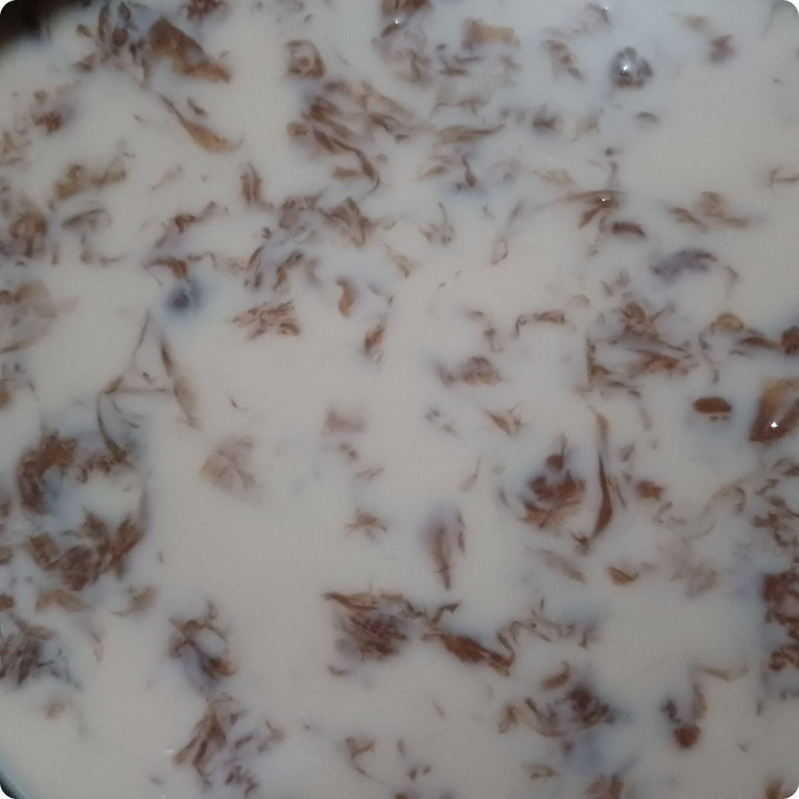
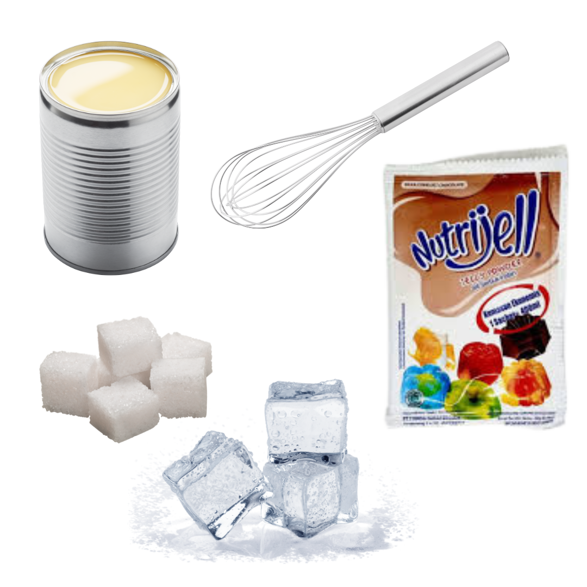
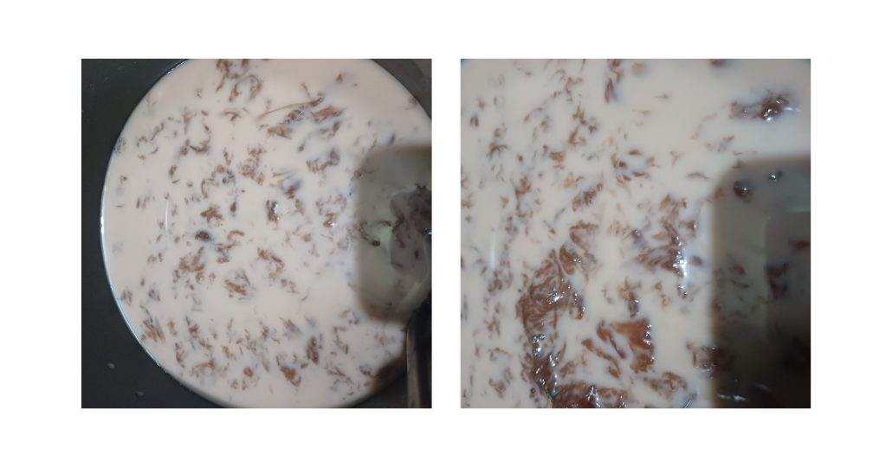

Es Puding Lumut

Bahan:
- Nutrijell Coklat atau yang lain
- SKM Coklat / Vanila
- Gula
- Es Batu
- Wisk
Cara Membuat:
- Buat puding terlebih dahulu sesuai petunjuk dikemasan
- Siapkan es batu
- Tuang puding secara perlahan di atas es batu, lalu segera tuang sisa puding sambil terus-menerus diaduk menggunakan wisk untuk memastikan hasil yang maksimal.

